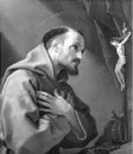

1206 yılının güneşli bir sabahında, Giovanni Francesco Bernardone (1181-1226) adında genç bir tüccar, İtalya’nın Foligno kasabasındaki bir pazara gitti. Yoğun ve kârlı bir günden sonra Asisi yakınlarındaki evine doğru yola çıktı. Yolunun üzerinde San Damiano adında eski bir kilise vardı. Genç adam burada durdu ve dua etmeye başladı.

Bernardone birden Hz. İsa’ya ait olduğuna inandığı bir ses duydu. Duyduğu şey genç adamın bütün hayatını değiştirdi: “Kilisemi yeniden inşa et.”
Daha sonraları Aziz Asisili Francis olarak anılacak olan genç adam varlıklı bir ailede dünyaya gelmiş, ama formel bir eğitim almamıştı. Babasının tekstil mağazasında çalıştı. Kazancını partilerde eğlenerek, pahalı giysiler alarak tüketti. 1201 yılında Asisi Ordusu’na katıldı. Perugia’ya karşı savaştı. 1203 yılında esir alındı ve yaklaşık bir yıl savaş esiri olarak zindanda kaldı.
Kilisede aldığı ilham yirmi beş yaşındaki genci servetinden vazgeçmeye ve kendisini dine adamaya yöneltti. Kilisenin bakımından sorumlu yaşlı bir keşişle irtibata geçti ve Foligno pazarından elde ettiği bütün kazancı buraya adayacağını söyledi (rahip bu öneriyi geri çevirdi, ancak Francis ikna olmadı; bunun üzerine piskopos onu parasını babasına vermeye zorladı). O günden sonra Francis yoksul bir hayat yaşamaya başladı.
Asisi’ye döndü ve pahalı giysilerini paçavralarla değiş tokuş etti. Franciscanlar olarak bilinen küçük bir dini grup kurdu. Bu grubun üyeleri yoksulluk yemini ediyordu. Hayatlarını cüzzamlılara ve toplum dışına itilmiş diğer insanlara adadılar. Francis’in amacı kiliseyi yeniden inşa etmekti. San Damiano’yu onarmak için kendi elleriyle taş bile topladı.
Franciscanlar, başlangıçta dini otoriteler tarafından kuşkuyla karşılandılar. Francis asla resmen bir rahip kabul edilmedi. Bununla birlikte 1209’da Papa 3. İnnocent (1161-1216), kurduğu grubu ve vaaz verme hakkını tanıdı. Francis, basit yaşam tarzına ek olarak hayvanlara olan sevgisi ile de biliniyordu. Söylendiğine göre onlarla konuşabiliyordu. Efsaneye göre, bir İtalyan köyüne dadanan kurtla konuşarak, onu bu şekilde davranmaması gerektiğine ikna etmişti.
Takipçileri kalabalıklaşan Francis, 5. Haçlı Seferi’ne katıldı. 1219 yılında Mısır Sultanı tarafından esir alındı. Daha sonra serbest bırakıldı ve Asisi’ye döndü. Öldüğünde kırk beş yaşındaydı.
Ek Bilgiler
1- 1228 yılında, ölümünden iki yıl sonra aziz ilan edilmiştir. Francis, hayvanların, İtalyan ulusunun ve ekolojinin koruyucu azizidir.
2- Francis aynı zamanda bir şairdi. Ondan geriye düzinelerce şiir kalmıştır. Yazdığı ilahilerden biri olan “Canticle of the Sun” (Güneş İlahisi) hâlâ söylenmektedir.
3- Franciscanlar’a benzeyen bir başka organizasyon olan “Yoksul Clareler”, 1211 yılında Asisili Azize Clare (1194-1253) tarafından kuruldu. Clare yerel bir asilin kızıydı.